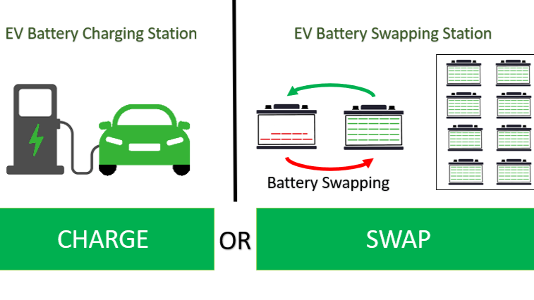
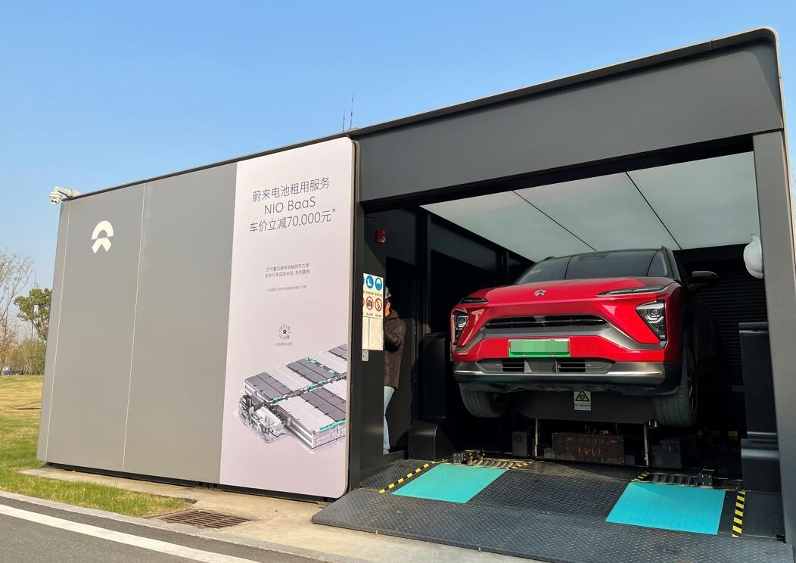
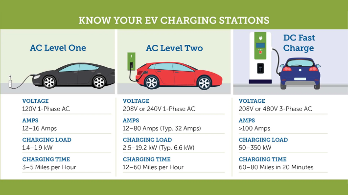
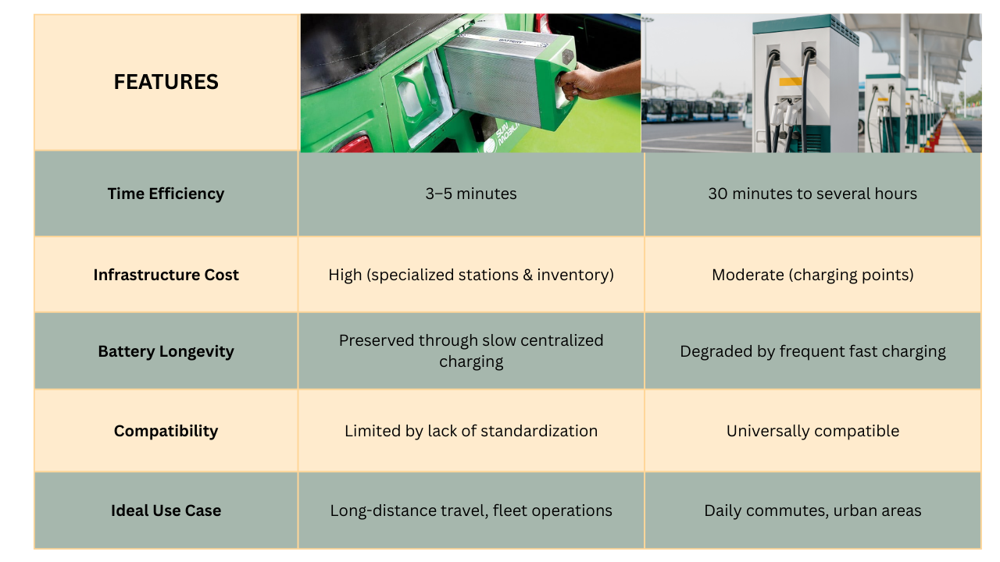
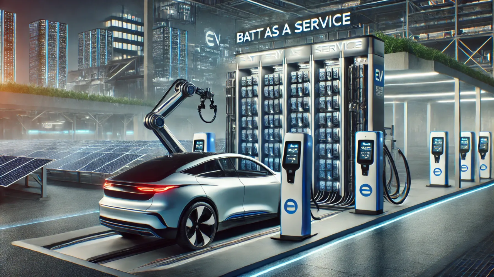
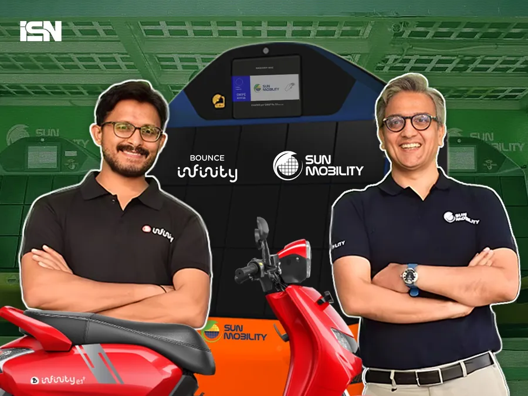
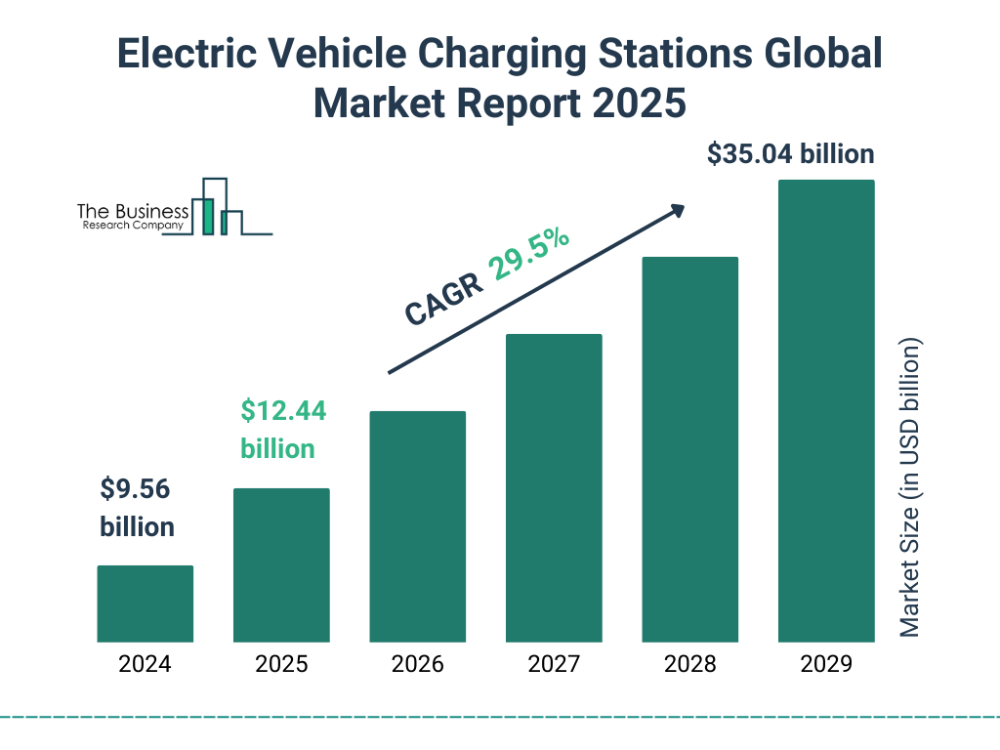
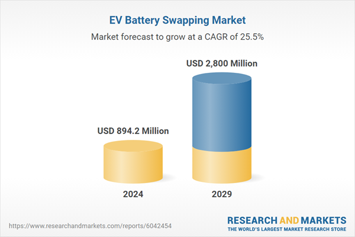

The electric vehicle (EV) market is experiencing a period of significant expansion, fueled by increasing environmental awareness, advancements in battery technology, and supportive government policies. As more consumers consider transitioning to electric mobility, a critical aspect of EV ownership comes into focus: how to efficiently and conveniently replenish the vehicle's energy.
Currently, two primary methods are available for fueling electric vehicles: charging stations and battery swapping technology. This newsletter aims to provide a comprehensive comparison of these two approaches, exploring their respective benefits and drawbacks across various crucial dimensions, thereby offering clarity on which might be the better path forward for widespread EV adoption.
Battery Swapping: A Quick Recharge Solution
Battery swapping, also known as battery switching, is an electric vehicle technology that offers a rapid alternative to traditional charging. The fundamental concept involves exchanging a depleted battery pack within an EV for a fully charged one. This process aims to replicate the speed and convenience of refueling a gasoline-powered car, addressing a key concern for potential EV adopters who may be hesitant about the potentially longer refueling times associated with charging.

The working mechanism of battery swapping varies depending on the type of vehicle. For cars and heavy-duty vehicles like trucks and buses, the process is often automated. Drivers enter a designated battery swap station (BSS), and an automated system identifies the vehicle model to ensure compatibility with its battery inventory. Typically, the vehicle is positioned on a platform that mechanically lifts it slightly. A robotic arm then locates the depleted battery, often situated under the chassis, unlocks its compartment, removes it, and installs a fully charged replacement. This entire process can be completed in just a few minutes without the driver needing to leave the vehicle. Market leaders like NIO and Aulton New Energy Automotive Technology Co., Ltd. widely use this under-chassis pack swap approach for cars. For larger vehicles such as trucks and buses, robotic cranes might lift battery packs from above or the side.

In contrast, the swapping process for the two and three-wheeler micromobility segment often employs a self-service approach. Users can manually replace smaller, lightweight battery packs themselves at vending-machine-like swap stations that hold a stock of charged batteries. Key players in this segment include Gogoro , Immotor , and Swobbee . Once the depleted battery is removed, it is placed on charge within the station to be available for future swaps. The diversity in these mechanisms demonstrates the adaptability of battery swapping technology to cater to the specific needs and designs of different vehicle categories.
EV Charging Stations
Charging stations, on the other hand, function similarly to traditional fuel stations, but instead of dispensing gasoline, they provide electricity to recharge the batteries of electric vehicles. This method involves physically connecting the EV to an external power source through a charging cable, allowing the battery to replenish its energy while remaining inside the vehicle. Charging stations are categorized into three main levels based on their power output and charging speed: Level 1, Level 2, and DC Fast Charging (DCFC) or Level 3.

Key Considerations

Battery Health and Longevity: Does Swapping Take a Toll?
Concerns about the impact of frequent battery swapping on battery life and potential degradation are often raised when comparing it to traditional charging methods. One potential concern is the wear and tear on the battery pack and its connecting electronics due to repeated loading and unloading during the swapping process. However, proponents argue that battery swapping, particularly in professionally managed swap stations, can actually lead to better battery health management and potentially longer lifespans.
The separation of the battery from the vehicle purchase through models like Battery-as-a-Service (BaaS) also allows for the swapping station operator to manage and maintain the battery assets optimally, potentially leading to more consistent and controlled charging practices than individual users might follow.

In contrast, the impact of traditional charging on battery health depends largely on the type of charging used and the charging habits of the EV owner. While slow charging (Level 1 and Level 2) is generally considered less detrimental to long-term battery health, frequent use of DC fast charging can accelerate degradation. It is often recommended to keep lithium-ion batteries, commonly used in EVs, between 20% and 80% state-of-charge for optimal longevity, and occasional full charges might be beneficial for cell balancing.
Several companies, such as Yulu , SUN Mobility , Bounce Infinity , and Battery Smart , have already established battery swapping stations in the Delhi NCR region, including Noida, indicating a growing recognition of the benefits of this technology for light electric vehicles in this urban environment. The Indian government's proactive guidelines aimed at fostering a battery swapping ecosystem further support the potential for its expansion in regions like Noida. These guidelines also permit battery swapping or battery charging stations to utilize existing electricity connections, potentially easing the infrastructure deployment process.

Adoption Trends and Future Outlook: Where Are We Headed?
The current adoption rates and future trends for battery swapping and charging technologies vary significantly across different regions and vehicle segments. China has emerged as a leader in battery swapping technology, particularly for electric cars, with companies like NIO operating an extensive network of over 2,300 swap stations worldwide, the majority of which are in China. Globally, the battery swapping market was valued at approximately $1.7 billion in 2022 and is projected to reach $11.8 billion by 2031, exhibiting a compound annual growth rate (CAGR) of 23-30%.

As of February 2024, India had approximately 12,146 public charging stations, a significantly larger number compared to the estimated 2,500 battery swapping stations. The global battery swapping charging infrastructure market is expected to reach USD 811.5 million by 2030, registering a CAGR of 23.6% from 2025 to 2030, with the Asia Pacific region currently dominating the market, holding 30.66% of the global share in 2024, fueled by growing EV adoption in countries like China and India.
The global EV battery swapping market is projected to grow from $894.2 million in 2024 to $2.8 billion by the end of 2029, at a CAGR of 25.5%. Several factors are likely to influence the widespread adoption of these technologies. The emergence of innovative business models, such as Battery-as-a-Service (BaaS), which can lower the upfront cost of EVs by decoupling the battery from the vehicle purchase, is also expected to drive the adoption of battery swapping.

Conclusion
Both battery swapping and traditional charging have their merits. Battery swapping excels in speed and operational efficiency, making it suitable for fleets and long-distance travelers. On the other hand, traditional charging is more versatile and cost-effective for general users. A hybrid approach combining both methods could pave the way for a sustainable EV ecosystem that caters to diverse needs.